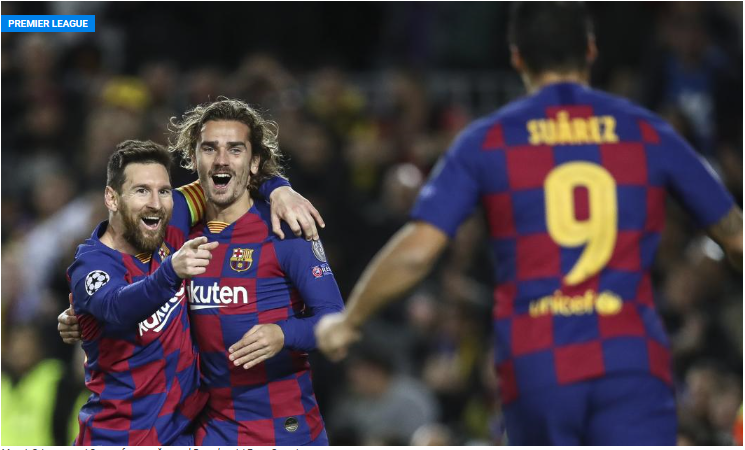
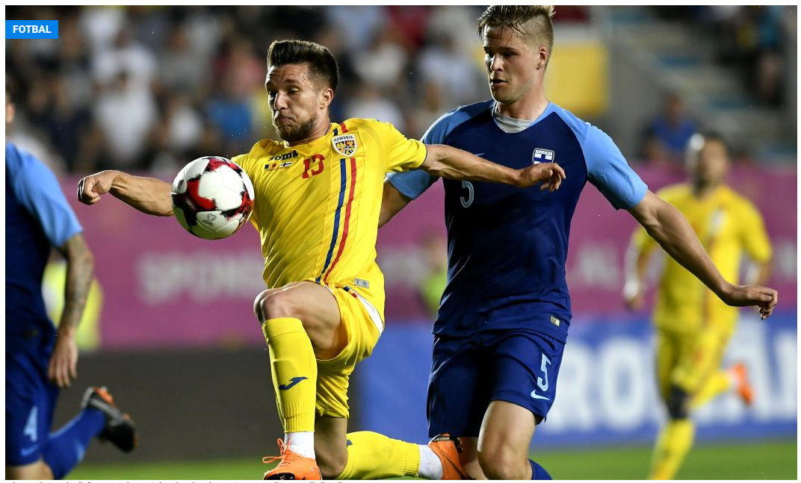
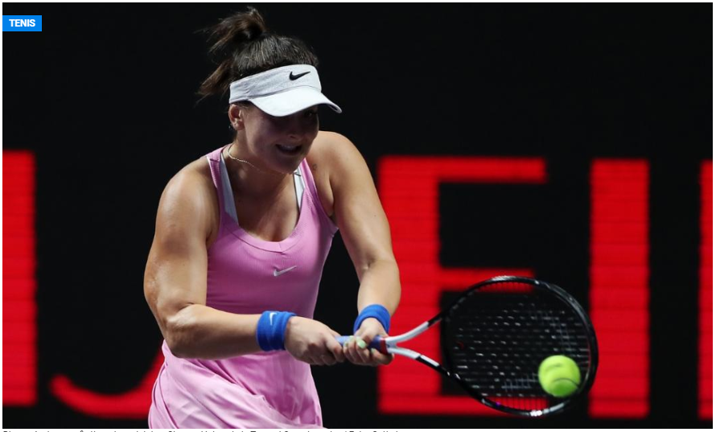

Newcastle este aproape să fie preluată de un grup de investitori dintre care cel mai potent financiar este chiar prinţul moştenitor al Arabiei Saudite, Mohammed bin Salman, iar formația engleză plănuiește să devină una dintre forțele fotbalului mondial.
Mohammed bin Salman plănuiește să investească serios în următoarele ferestre de transferuri, în ciuda pandemiei de coronavirus, iar printre numele de fotbaliști vehiculate sunt cele ale lui Philippe Coutinho și Antoine Griezmann, scrie Daily Mirror, citat de Sport.
Coutinho, care va împlini 28 de ani în luna iunie, este împrumutat de Barcelona la Bayern Munchen, până la finalul actualei stagiuni, însă bavarezii nu și-au exprimat până în prezent dorința de a-l achiziționa definitiv pe brazilian.
Alexandru Băluță, atacantul echipei cehe Slovan Liberec, povestește pentru Digi Sport cum s-a antrenat la nivel mental în perioada de pauză cauzată de pandemia de coronavirus.
Fostul component al Universității Craiova a reluat pregătirile în sistem organizat de pe 20 aprilie și are un tonus excelent, după ce soția sa, Diana, a născut ieri dimineață o fetiță, Anastasia.
Împrumutat de Slavia Praga la Slovan, Băluță (26 de ani), jucător impresariat Magico Sport prin reprezentantul Dragoș Boboc, fost fundaș la Jiul, Bacău și Farul, și-a dezvăluit, pentru Digi Sport, și marele său vis.
Salut, Alex! Ce simte un sportiv când e legat de mâini și de picioare într-o astfel de perioadă?
A fost o perioadă dificilă, o perioadă care-mi va rămâne mult timp în cap, dar am fost optimist în fiecare zi și am avut noroc de părinții mei care au reușit să fie alături de mine în tot acest timp. M-am antrenat zilnic și am respectat programul echipei, deși e greu mental să te antrenezi de unul singur atât de mult timp.
Bianca Andreescu (19 ani / 6 WTA), deținătoarea titlului la US Open, a povestit lupta la nivel mental pe care o duce în perioada carantinei, cât timp tenisul mondial e suspendat din cauza pandemiei de coronavirus.
"Nu e ușor în carantină din punct de vedere mental, încerc să rămân focusată pe ceea ce contează. Succesul depinde foarte mult și de proiecțiile pe care ți le faci. De felul în care te imaginezi la un moment dat. Așa s-a întâmplat și la New York, mi-am imaginat succesul", a declarat Andreescu pentru sursa citată.
Bianca se află în recuperare după probelemele pe care le-a avut la spate. Sever Dron vorbea pentru Digi Sport, în urmă cu două săptămâni, despre accidentarea jucătoarei care a câștigat din tenis aproape 7 milioane de dolari.
Fostul mare jucător american Andy Roddick (37 de ani, fost lider ATP) o caracteriza pe Bianca, după succesul de la US Open, cu eticheta "Street fighter", datorită jocul său agresiv, datorită răutății pozitive de care dă dovadă pe terenul de tenis.
Campioana de la Flushing Meadows a comentat: "Am fost impresionată să aud ceea ce a spus Andy despre mine. El e o voce autorizată care are expertiza pentru a vorbi despre emoțiile și stilul fiecărui jucător".
